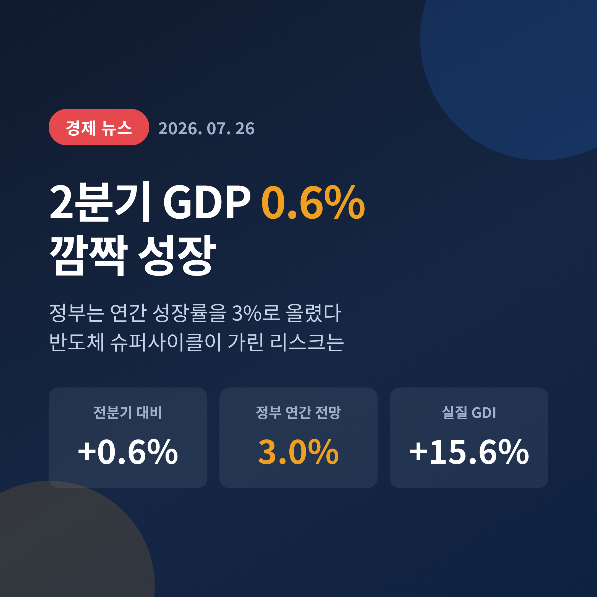
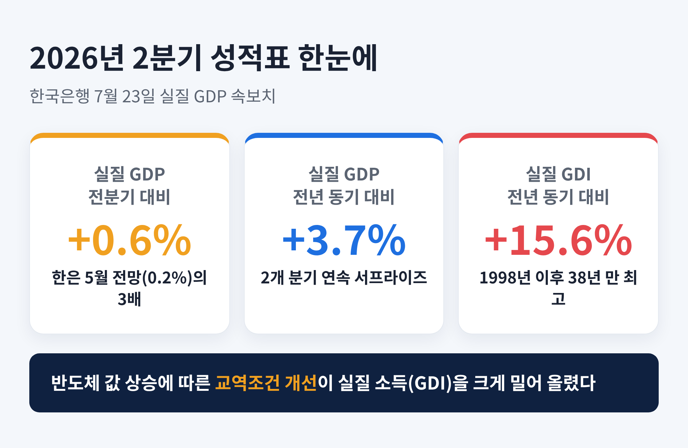
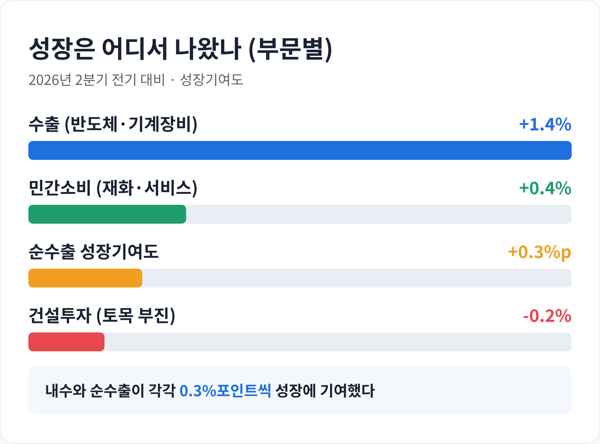
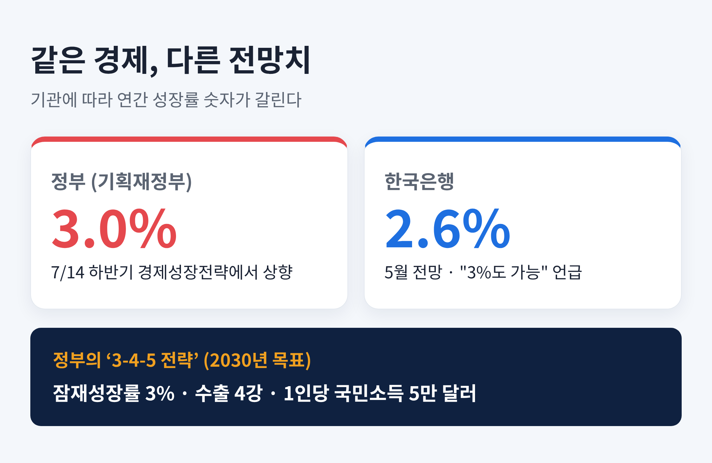
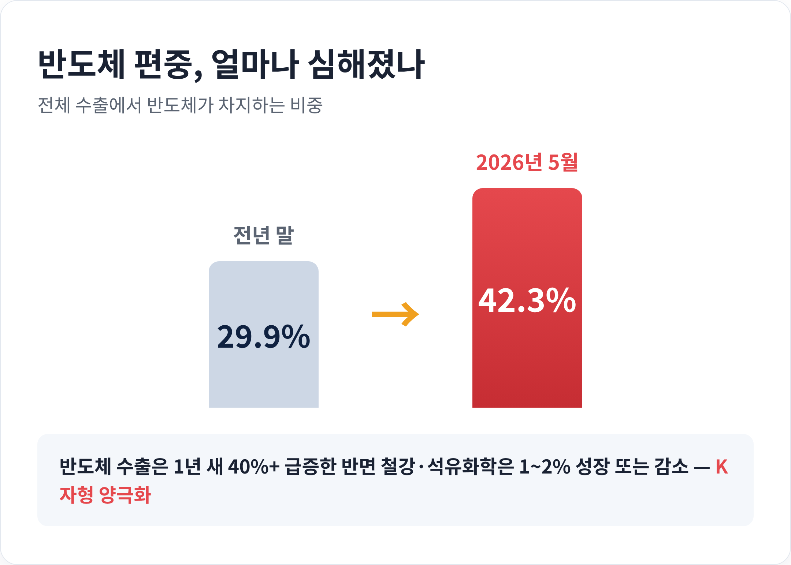
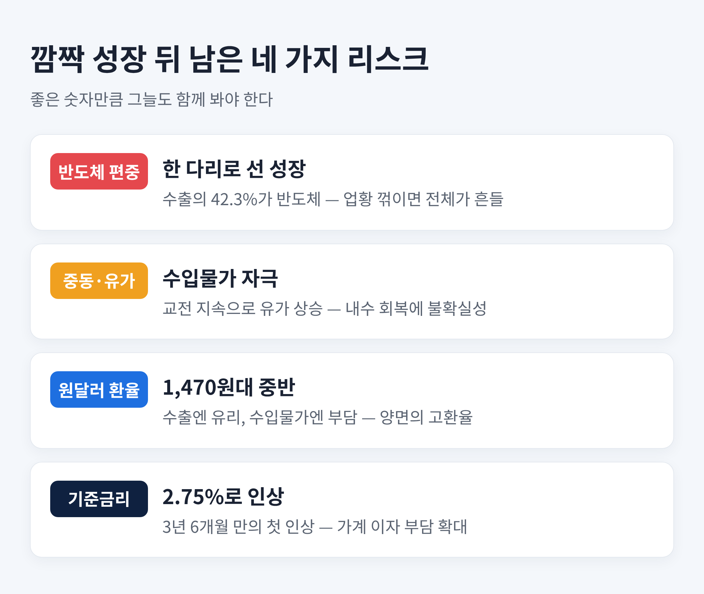

2분기 GDP 0.6% 깜짝 성장과 정부 3% 상향, 반도체 슈퍼사이클이 가린 리스크
이번 글에서는 2026년 2분기 한국 경제 성적표와 정부의 성장률 상향 소식을 정리해 보겠습니다.
숫자는 분명 좋습니다. 다만 그 숫자가 어디에서 왔는지, 그 이면에 무엇이 가려져 있는지를 함께 짚어보려 합니다.

무슨 일이 있었나
한국은행이 7월 23일 2026년 2분기 실질 국내총생산(GDP) 속보치를 내놨습니다.
결과는 전분기 대비 0.6% 성장.
전년 동기와 비교하면 3.7% 늘었습니다.
숫자만 보면 평범해 보일 수 있습니다.
그러나 맥락을 얹으면 이야기가 달라집니다.
한은이 지난 5월 제시했던 2분기 전망치는 0.2%였습니다.
실제 성적은 그 세 배에 가까웠습니다.
전망을 0.4%포인트나 웃돈 셈입니다.
직전 분기에 이어 두 개 분기 연속 '깜짝 성장'입니다.
시장에서는 이를 두고 서프라이즈라는 말을 반복해서 씁니다.
한 가지 더 눈에 띄는 지표가 있습니다.
실질 국내총소득(GDI)입니다.
2분기 GDI는 전년 동기 대비 15.6% 뛰었습니다.
1998년 1분기 이후 38년 3개월 만의 최고치입니다.
반도체 값이 오르며 교역조건이 좋아진 것이 실질 소득을 크게 밀어 올렸습니다.

성장의 엔진은 반도체였다
이번 성장을 끌고 간 것은 수출이었습니다.
그중에서도 반도체입니다.
2분기 수출은 전기 대비 1.4% 늘었습니다.
반도체와 기계·장비가 앞장섰습니다.
AI 데이터센터 투자가 전 세계에서 늘면서 메모리 반도체 수요가 함께 커진 결과입니다.
부문별로 보면 그림이 선명합니다.
민간소비는 0.4% 늘었습니다. 가전제품 같은 재화와 음식·숙박 같은 서비스가 함께 회복됐습니다.
반면 건설투자는 토목 부진으로 0.2% 뒷걸음쳤습니다.
성장에 대한 기여도는 내수와 순수출이 각각 0.3%포인트씩이었습니다.
중동에서 전운이 감도는 와중에도 반도체가 성장을 떠받쳤다는 평가가 나옵니다.

정부는 왜 성장률을 3%로 올렸나
좋은 성적표는 전망치도 끌어올렸습니다.
정부는 이보다 앞선 7월 14일 '2026년 하반기 경제성장전략'을 발표했습니다.
이 자리에서 올해 실질 성장률 전망을 3.0%로 상향했습니다.
경상성장률은 12.3%로 제시했습니다.
정부의 그림은 단순한 숫자 상향이 아닙니다.
반도체 호황으로 번 성장의 힘을 미래 산업 투자로 잇겠다는 구상입니다.
이른바 '3-4-5 전략'입니다.
2030년까지 잠재성장률 3%, 수출 4강, 1인당 국민소득 5만 달러를 이루겠다는 목표입니다.
여기에 반도체·AI 데이터센터·피지컬AI를 축으로 한 1,350조 원 규모의 3대 메가 프로젝트도 붙였습니다.
다만 여기서 주의할 지점이 하나 있습니다.
3.0%는 정부(기획재정부)의 전망입니다.
한국은행의 공식 전망치는 다릅니다.
한은은 5월 기준 2.6%를 제시했고, 2분기 호조 뒤에야 "3% 성장도 가능하다"는 표현을 조심스레 덧붙였습니다.
같은 경제를 두고 정부는 3.0%, 한은은 2.6%를 말하고 있는 셈입니다.
어느 쪽 숫자를 인용하느냐에 따라 체감이 달라지니, 출처를 함께 보는 편이 정확합니다.

좋은 숫자 뒤에 남는 질문들
여기까지가 밝은 이야기입니다.
이제 그늘을 봅니다.
첫째, 반도체 편중입니다.
전체 수출에서 반도체가 차지하는 비중은 5월 기준 42.3%까지 올랐습니다.
전년 말 29.9%에서 가파르게 뛴 수치입니다.
반도체 수출이 1년 새 40% 넘게 느는 동안, 철강과 석유화학은 1~2% 성장에 그치거나 줄었습니다.
자동차와 기계 같은 전통 제조업도 힘겨웠습니다.
이렇게 잘되는 쪽과 그렇지 못한 쪽이 갈리는 모습을 두고 'K자형 양극화'라 부릅니다.
한쪽 다리로 서 있는 성장은 그 다리가 흔들리면 함께 흔들립니다.
반도체 업황이 꺾이거나 특정 시장 수요가 식으면, 전체 성장률이 크게 출렁일 수 있습니다.
둘째, 체감의 문제입니다.
거시 지표는 환호하는데 서민이 느끼는 살림살이는 그렇지 않다는 지적이 나옵니다.
'거시의 환희, 미시의 비명'이라는 표현이 이를 압축합니다.
성장률 숫자가 반도체가 만든 착시일 수 있다는 경계입니다.
셋째, 대외 변수입니다.
중동의 교전이 이어지며 국제유가가 들썩입니다.
유가가 오르면 수입물가와 생산자물가가 따라 오르고, 겨우 살아나던 내수가 다시 위축될 수 있습니다.
원달러 환율도 7월 하순 1,470원대 중반에서 오르내렸습니다.
높은 환율은 수출 기업에 유리한 면이 있지만, 수입 물가를 자극해 국민 부담을 키우는 양면을 지닙니다.

금리는 방향을 틀었다
성장세는 통화정책의 방향도 바꿔놨습니다.
한국은행 금융통화위원회는 7월 16일 기준금리를 연 2.50%에서 2.75%로 0.25%포인트 올렸습니다.
만장일치 결정이었습니다.
2023년 1월 이후 약 3년 6개월 만의 첫 인상입니다.
이 한 번의 인상은 단순한 조정이 아닙니다.
내리던 흐름에서 올리는 흐름으로, 긴축 쪽으로 방향을 튼 신호로 읽힙니다.
배경에는 탄탄한 성장세, 물가와 기대인플레이션, 불어난 가계부채, 그리고 환율과 부동산 같은 금융안정 부담이 함께 놓여 있습니다.
성장이 좋다는 것은 반가운 소식이지만, 그만큼 빚을 진 가계의 이자 부담은 무거워집니다.
성장의 온기가 수출 대기업에 집중되는 사이, 금리 인상의 냉기는 대출을 안은 가계와 자영업자에게 먼저 닿습니다.
같은 경제 안에서도 온도가 이렇게 엇갈립니다.

앞으로 무엇을 볼 것인가
그렇다면 하반기에는 어디를 지켜봐야 할까요.
먼저 반도체 사이클의 지속성입니다.
지금의 호황은 AI 투자라는 거대한 흐름에 올라타 있습니다.
그 흐름이 언제까지 이어지느냐가 성장의 높이를 결정합니다.
전년 동기 대비 지표는 지난해가 부진했던 기저효과도 얹혀 있어, 하반기로 갈수록 성장률 숫자는 다소 낮아질 수 있습니다.
다음은 대외 통상 환경입니다.
반도체가 대미 수출에 크게 기대는 만큼, 미국의 관세·통상 정책 변화가 곧바로 우리 성적표에 반영됩니다.
품목도 시장도 한곳에 몰릴수록 외부 충격에 약해지는 법입니다.
마지막은 금리의 다음 발걸음입니다.
이번 인상이 한 번으로 끝날지, 추가 인상으로 이어질지에 따라 가계와 부동산 시장의 체감은 크게 달라집니다.
성장과 물가, 부채 사이에서 한국은행이 어떤 균형점을 고를지가 하반기의 관전 포인트입니다.
정리하면 이렇습니다.
2026년 2분기 한국 경제는 반도체라는 강한 엔진 덕분에 예상을 뛰어넘는 성적을 냈습니다.
정부는 이 힘을 근거로 연간 성장률을 3%까지 끌어올렸습니다.
하지만 그 성장은 특정 산업에 크게 기대고 있고, 체감 경기와 대외 변수라는 그늘을 함께 안고 있습니다.
결국 남는 것은 하나의 질문입니다.
"이 성장을, 반도체 한 품목에만 기대지 않는 성장으로 어떻게 넓힐 것인가."
숫자의 환호가 오래 이어지려면, 그 답을 지금부터 준비해야 할 것입니다.
※ 이 글은 공개된 통계와 언론 보도를 바탕으로 한 경제 해설이며, 특정 자산에 대한 투자 권유가 아닙니다. 투자 판단과 그 결과에 대한 책임은 투자자 본인에게 있습니다.